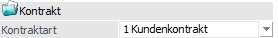
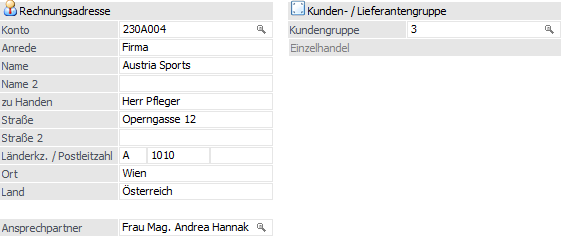
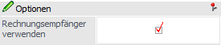
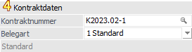
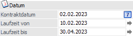
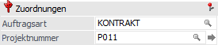
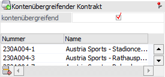
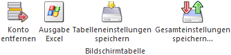
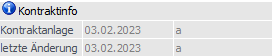
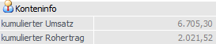

Um einen Kontrakt zu erfassen oder aufzurufen muss im Register "Kopf" zuerst gewählt werden, welche Kontraktart bearbeitet werden soll. Anschließend wird die Kunden- oder Lieferantennummer bzw. die jeweilige Gruppe eingegeben bzw. über den Matchcode gesucht. Die Kontraktnummer wird vom Programm im Anschluss automatisch vergeben. Hierbei handelt es sich um eine fortlaufende Nummerierung pro Kunde / Lieferant, welche jederzeit editiert werden kann.
Hinweis
Weitere Informationen, u.a. zu den Buttons des Programms "Kontrakterfassung", sind dem Kapitel Kontrakterfassung zu entnehmen.

Folgende Eingabefelder, Einstellungen und Information stehen zur Verfügung:
Kontrakt

Ø Kontraktart
An dieser Stelle wird definiert, welche Art von Kontrakt erstellt bzw. editiert werden soll. Folgende Einstellungen stehen zur Verfügung:
ü 1 - Kundenkontrakt
ü 2 - Kundengruppenkontrakt
ü 3 - Lieferantenkontrakt
ü 4 - Lieferantegruppenkontrakt
Beispiel
Ein häufiges Anwendungsbeispiel für einen Gruppenkontrakt sind Vereinbarungen mit Betrieben, die über ein Filialnetz verfügen, bzw. mit Einkaufsgenossenschaften.
Das bedeutet, dass ein Kontrakt abgeschlossen wird, der von mehreren Kunden in Anspruch genommen wird.
Rechnungsadresse / Lieferadresse bzw. Kunden- / Lieferantengruppe

Ø Konto (Kunden- / Lieferantennummer) bzw. Kunden- / Lieferantengruppe
An dieser Stelle kann die Kontonummer des Personenkontos bzw. der Gruppe, für welches der Kontrakt erstellt werden soll, hinterlegt werden. Anhand dieser Hinterlegung werden eine Reihe von Vorbelegungen getätigt (u.a. die Adressdaten), wobei eine nachfolgende Überarbeitung möglich ist.
Achtung
Mit dem Aufruf der Kontonummer werden einige Vorbesetzungen durchgeführt. Dabei hängt es von den FAKT-Parameter (Belege - Allgemein - Option "Hauptkonto für Belege") ab, welche Datenbereiche von welchem Konto (Rechnungsadresse oder Lieferadresse) geladen werden. Anhand dieser Einstellung wird auch definiert, ob zuerst die Rechnungsadresse oder die Lieferadresse eingegeben werden soll. Die folgende Auflistung stellt die Standardvorbelegung da, kann aber mit Hilfe von "Kontenvorlagen" (in der Belegart zu hinterlegen) übersteuert werden:
ü Hauptkonto
ü Summenrabatt
ü Belegart
ü Preisliste
ü Teilliefersperre
ü Priorität
ü Kostenträger für Maskierung aus der Belegart im Belegkopf
ü Steuerleiste für UstCode
ü Kundengruppe
ü Rabattleisten
ü Bestprice-Kennzeichen für Preisfindung
Hinweis
Das Hauptkonto wird auch für die Dispositionstabelle (Rückstandsliste) und für die Kundenumsatzliste verwendet. Eine eventuelle Buchung für die Finanzbuchhaltung wird für die Rechnungsadresse erstellt.
ü Lieferadresse
ü Vorbelegung für Auspr.1 und Auspr.2
ü Tour und Gebiet
ü Rechnungsadresse
ü Kreditlimitprüfung (Warn-/Sperrtexte, Warn-/Sperrbeträge)
ü OP-Kennzeichen
ü Lieferadresse (wenn Rechnungsempfänger-Automatik aktiviert ist)
ü Vertreter
ü Belegkopftexte
ü Belegart
ü Zahlungskondition (Quelle in Belegart definierbar)
Ø Ansprechpartner
An dieser Stelle kann der Ansprechpartner des Kontos für den Kontrakt hinterlegt werden. Automatisch wird derjenige Ansprechpartner vorgeschlagen, welcher im Personenkontenstamm des gewählten Kontos das Kennzeichen "Standard" hinterlegt hat. Ist dieses Kennzeichen bei keinem Ansprechpartner gesetzt, so wird in dem Feld der Eintrag "Keine" vorbelegt.
Optionen

Ø Rechnungsempfänger verwenden
Durch Aktivierung dieser Option wird bei einem neuen Beleg automatisch der abweichende Rechnungsempfänger, welcher beim Kundenkonto hinterlegt ist (Personenkontenstamm - Register "FAKT" - Feld "Rechnungsempfänger"), als Rechnungsempfänger im Beleg gesetzt und das zuvor eingetragene Konto als Lieferadresse.
Beispiel
In dem Personenkonto "230A001-L1" wurde der Rechnungsempfänger "230A001" hinterlegt. Wird nun als Rechnungsempfänger "230A001-L1" eingetragen und dieses bestätigt (Option "Rechnungsempfänger verwenden" ist aktiviert,), so wird als Rechnungsempfänger "230A001" gesetzt und das Konto "230A001-L1" ist (nur noch) die Lieferadresse.
Kontraktdaten

Ø Kontraktnummer
Die Funktion der Kontraktnummer ist das schnelle Übergeben eines Kontrakt in die Kontraktabbuchung oder das Aufrufen / Editieren von bestehenden Kontrakten. Die Kontraktnummer ist dabei max. 20-stellig und alphanumerisch.
Solange die Kontraktnummer nicht bestätigt wurde, kann kein anderes Eingabefeld bearbeitet werden.
Hinweis
Pro Kunde bzw. Lieferanten teilen sich Lauf- und Kontraktnummer einen Nummernkreis. D.h. wird in der Kontraktnummer manuell eine hohe Nummer vergeben, so wird der Vorschlag der Laufnummer in der Belegerfassung entsprechend darauf reagieren.
Ø Belegart
An dieser Stelle wird automatisch die Standard-Belegart des Kunden / Lieferanten vorgeschlagen und kann editiert werden. Hierbei stehen aber nur all jene Belegarten zur Verfügung, welche lt. Kunden- / Lieferantengruppe erlaubt sind und der Kontraktart (Einkauf / Verkauf) entsprechen.
Hinweis
Ist in der Belegart eine so genannte Kontenvorlage hinterlegt, so werden bestimmte Bereiche lt. dieser Vorlage herangezogen bzw. berücksichtigt!
Datum

Ø Kontraktdatum
Hier kann das Kontraktdatum eingetragen werden, wobei das Tagesdatum automatisch vorgeschlagen wird. Ein schnelles Ändern des Datums ist mit den Tasten + und - möglich. Durch Drücken der Taste F3 kann das aktuelle Tagesdatum wieder gesetzt werden.
Hinweis
Unter diesem Datum wird der Kontrakt gespeichert, wodurch es das "offizielle" Datum des Kontrakts ist. Das Datum hat aber kein Einfluss auf die Gültigkeit der Kontraktzeilen.
Ø Laufzeit von/bis
Eingabe der Zeitspanne, für die der Kontrakt gelten soll.
Ø Lieferdatum
Die hier eingegebene Laufzeit gilt als Standardwert für alle Kontraktzeilen. Durch diese Eingabe wird gesteuert…
ü … innerhalb welchen Zeitraumes die für den Kontrakt definierten Vereinbarungen über Preise, Konditionen, etc. Gültigkeit haben.
ü … für welchen Zeitraum die WinLine Kontraktmenge und tatsächliche Abnahmemenge gegenüberstellen soll.
Hinweis
Sollte die Laufzeit für einzelne Artikel abweichen, so kann das Datum in den Register Mitte bzw. Detailinfo übersteuert werden.
Wird ein bereits bearbeiteter und einmal gespeicherter
Kontrakt bearbeitet, so kann durch Anklicken des  Buttons das in dieses Feld eingegebene
Datum auf alle bestehenden Kontraktzeilen kopiert werden.
Buttons das in dieses Feld eingegebene
Datum auf alle bestehenden Kontraktzeilen kopiert werden.
Zuordnungen

Ø Auftragsart
Die Auftragsart kann aus den hinterlegten Auftragsarten gewählt oder spezifisch pro Kontrakt eingegeben und in der Statistik bzw. der Vertreterabrechnung ausgewertet werden.
Ø Projektnummer
In diesem Feld kann die Projektnummer eingegeben werden, mit welcher Belege zusammengefasst werden können (Vorgangsnummer). Zur Suche nach einer bereits bestehenden Projektnummer steht der Matchcode zur Verfügung.
Kontenübergreifender Kontrakt

Ø kontenübergreifend
Durch Aktivieren dieser Option (die nur zur Verfügung steht, wenn in den FAKT-Parametern die entsprechende Option aktiviert ist) kann festgelegt werden, für welche Konten der Kontrakt zusätzlich gültig sein sollen. Dazu müssen in der Tabelle unterhalb der Checkbox die entsprechenden Konten angegeben werden.
Tabellenbuttons

Ø Konto entfernen
Mit Hilfe dieses Buttons können Konten, die dem Kontrakt zugeordnet sind, wieder entfernt werden.
Ø Ausgabe Excel
Durch Anwahl des Buttons "Ausgabe Excel" wird der Inhalt der Tabelle an Microsoft Excel übergeben.
Ø Tabelleneinstellungen speichern
Die Spalten einer Tabelle können grundsätzlich an beliebige Positionen verschoben, bzw. in der Breite entsprechend angepasst werden. Durch Anwahl des Buttons "Tabelleneinstellungen speichern" werden die Einstellungen benutzerspezifisch gespeichert und bei dem nächsten Aufruf des Programmpunktes wieder vorgeschlagen.
Ø Gesamteinstellungen speichern
Im Gegensatz zu "Tabelleneinstellungen speichern" können mit "Gesamteinstellungen speichern" mehrere Tabellenaufbauten gespeichert und nach Wunsch geladen werden. Zusätzlich werden Sonderfunktionen der Tabelle (z.B. "Spalte gruppieren") ebenfalls bei der Speicherung bedacht.
Kontraktinfo

Ø Kontraktanlage
Es werden das Datum und der Benutzer angezeigt, wann bzw. durch wen der Kontrakt erfasst wurde.
Ø letzte Änderung
Es werden das Datum und der Benutzer angezeigt, wann bzw. durch wen der Kontrakt zuletzt geändert wurde.
Kontoinfo

Ø kumulierter Umsatz
Darstellung des kumulierten Umsatzes vom aktiven Personenkonto.
Ø kumulierter Rohertrag
Darstellung des kumulierten Rohertrags vom aktiven Personenkonto.
Sonderfunktion - Drag & Drop von Dokumenten
In das Register "Kopf der Kontrakterfassung kann ein externes Dokument mittels Drag & Drop fallen gelassen und somit archiviert werden. Die Dokumente werden u.a. im Archiveintrag suchen oder dem Programm "Belege" dargestellt.
Wenn der Beleg das erste Mal nach dem Einfügen des Dokuments gedruckt wird, wird auch der Ausdruck der aktuellen Belegstufe mit archiviert. Ob ein Dokument nur in der jeweiligen Belegstufe, in welcher es eingefügt wurden, im Belegerfassen angezeigt wird, kann per Belegart (Register "Ausdruck" - Option "In allen Stufen druckbar") entschieden werden.
Hinweis
Wenn eine WinLine ARCHIV-Lizenz vorliegt, dann wird bei dem Drag & Drop eines Dokumentes automatisch der Programmbereich "Archiv - Schlagwörter" geöffnet (Option "Schlagwortfenster nach Drag und Drop öffnen" im "WinLine ADMIN - Archiv - Archiv Parameter" muss hierfür aktiviert sein).